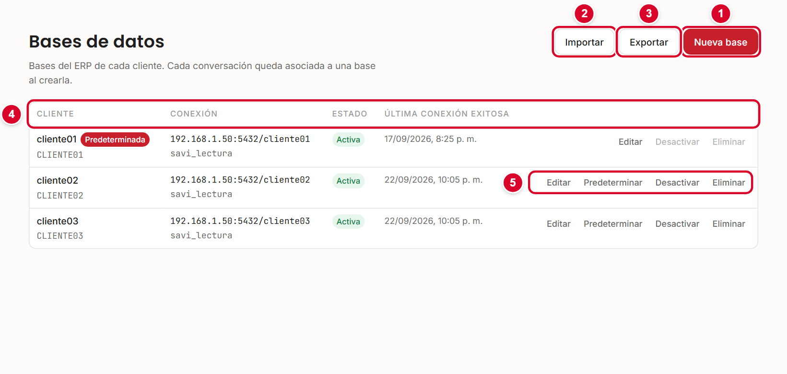
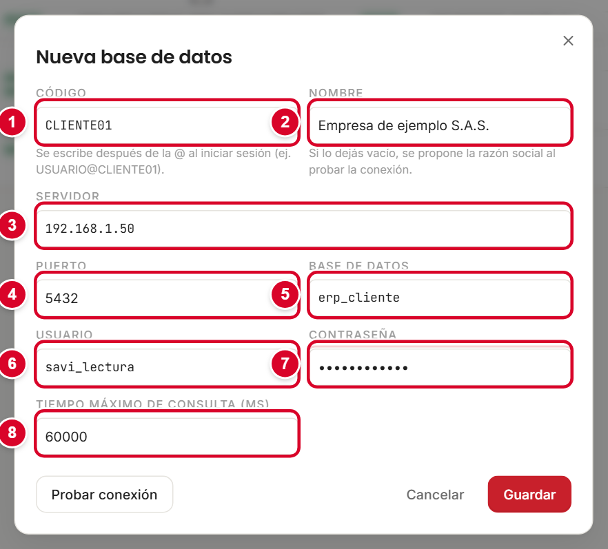
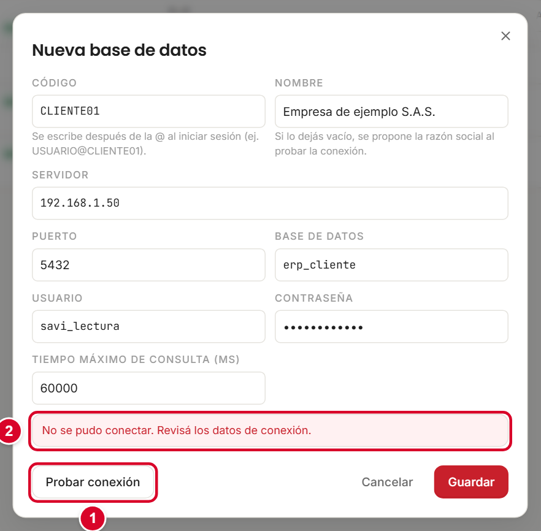
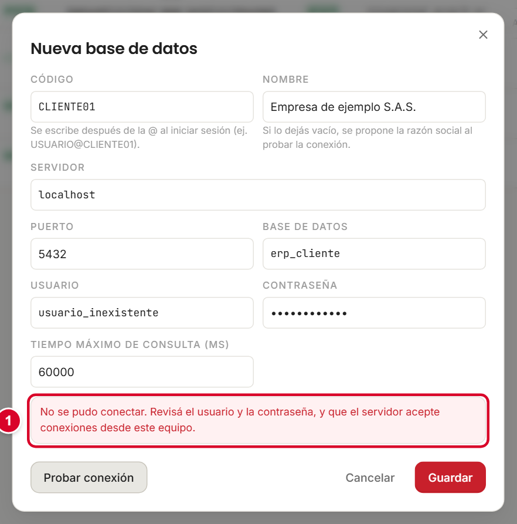
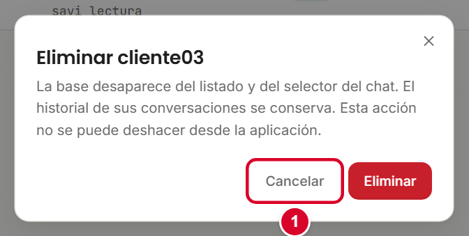
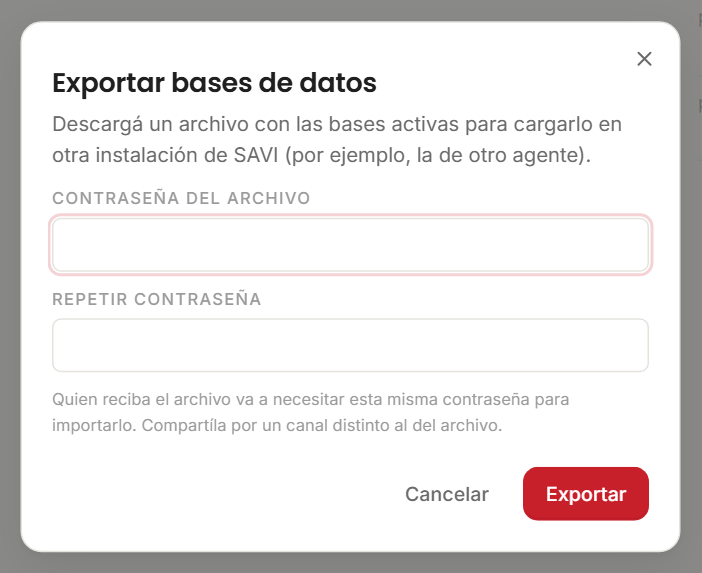

Qué va a encontrar
Toque o haga clic en un título para ir directo a esa parte.
- 1. Las dos bases de datos que usa SAVI
- 2. Un cliente, una base, un código
- 3. La pantalla Administración → Bases de datos
- 4. Agregar una base nueva
- 5. Probar la conexión
- 6. Administrar las bases ya registradas
- 7. Qué pide el instalador
- 8. Si la base del ERP está en otro equipo
- 9. Cómo obtienen acceso las personas
- 10. Consejos y resolución de problemas
1. Las dos bases de datos que usa SAVI
SAVI trabaja con dos bases de datos distintas. Es importante no confundirlas:
| Base del ERP | Base de SAVI | |
|---|---|---|
| Qué guarda | Los datos de la empresa: ventas, inventario, cartera, compras, contabilidad. | El historial de conversaciones, las sesiones, la configuración de proveedores de IA y los documentos de conocimiento. |
| Quién la crea | El ERP de SEO Group. Ya existe. | SAVI (si no existe, la crea el instalador). |
| Cómo la usa SAVI | Solo lectura. SAVI nunca escribe, modifica ni borra nada en la base del ERP. | Lectura y escritura. |
| Cuántas hay | Una por cliente (empresa). | Una por instalación de SAVI. |
| Tipo | PostgreSQL. | PostgreSQL (recomendado) o archivo local (solo para pruebas o un único usuario). |
Con el archivo local, SAVI atiende bien a un usuario a la vez: si varias personas chatean al mismo tiempo, las respuestas se traban o fallan, y el historial queda solo en ese equipo, sin respaldo. Para el uso normal en una empresa, elija PostgreSQL.
Esta guía explica cómo registrar las bases del ERP de cada cliente desde la pantalla de administración, y cómo se piden los datos al instalar.
2. Un cliente, una base, un código
SAVI puede atender a varias empresas desde la misma instalación. Cada empresa (cliente) corresponde a una base del ERP y tiene un código propio, por ejemplo CLIENTE01.
- El código es lo que las personas escriben al iniciar sesión, después de una arroba:
USUARIO@CLIENTE01. Así SAVI sabe contra qué base validar el usuario. - En el chat, cada conversación queda atada a un cliente, que se elige en el selector Cliente.
- Una de las bases se marca como Predeterminada: es la que se usa cuando alguien entra sin escribir un código.
3. La pantalla Administración → Bases de datos
- Entre a SAVI con un usuario administrador.
- Toque Administración en el menú de la izquierda.
- Elija Bases de datos.

- 1Nueva base: registra el ERP de un cliente.
- 2Importar: carga las bases desde un archivo exportado de otra instalación.
- 3Exportar: genera un archivo con las bases activas.
- 4Columnas: Cliente (nombre y código), Conexión (servidor:puerto/base y usuario), Estado y Última conexión exitosa.
- 5Acciones de cada fila: Editar, Predeterminar, Desactivar y Eliminar.
Estados de una base
| Estado | Significado |
|---|---|
| Activa | Se puede usar normalmente. |
| Desactivada | No se pueden iniciar conversaciones nuevas ni enviar mensajes contra esta base. El historial se sigue viendo. |
| Credenciales ilegibles | No se pudo leer la contraseña guardada. Edite la base y vuelva a ingresarla. |
| Predeterminada (etiqueta) | Es la base que se usa por defecto. |
4. Agregar una base nueva
Antes de empezar, tenga a mano los datos de conexión de la base del ERP del cliente (los entrega quien administra el servidor de base de datos).
- Toque Nueva base. Se abre el formulario Nueva base de datos.
- Complete los campos, uno por uno (tabla de abajo).
- Toque Probar conexión y espere el resultado (sección 5).
- Si salió bien, toque Guardar. Si no, corrija lo que indica el mensaje.

| N.º | Campo | Qué poner | Ejemplo |
|---|---|---|---|
| 1 | Código | Una sigla corta del cliente, de 2 a 32 caracteres: letras, números, guion o guion bajo. Se guarda en mayúsculas. Es lo que se escribe después de la arroba al entrar. | CLIENTE01 |
| 2 | Nombre | El nombre que verán los usuarios en el selector. Si lo deja vacío, se propone la razón social de la empresa al probar la conexión. | Empresa de ejemplo S.A.S. |
| 3 | Servidor | La dirección del servidor donde está la base. Es el mismo dato que el "servidor" del instalador. Si SAVI y la base están en el mismo equipo, localhost. Si no, la dirección IP o el nombre del servidor. | 192.168.1.50 |
| 4 | Puerto | El puerto de PostgreSQL. Casi siempre 5432. | 5432 |
| 5 | Base de datos | El nombre de la base del ERP dentro del servidor. | erp_cliente |
| 6 | Usuario | El usuario de PostgreSQL con el que SAVI se conecta. Conviene uno de solo lectura, creado para SAVI. No es el usuario con el que las personas entran a SAVI. | savi_lectura |
| 7 | Contraseña | La contraseña de ese usuario de PostgreSQL. Se muestra con puntos. Al editar una base, déjela vacía para conservar la actual. | (puntos) |
| 8 | Tiempo máximo de consulta (ms) | Cuánto puede tardar una consulta antes de cortarla, en milisegundos. Entre 1000 y 600000. Normalmente no se toca. | 60000 (un minuto) |
Pídale a quien administra el servidor un usuario de PostgreSQL exclusivo para SAVI con permisos de solo lectura. Si usa el superusuario (postgres), la prueba de conexión le avisa que no es lo recomendable: SAVI solo necesita leer.
5. Probar la conexión
Probar conexión intenta entrar a la base con los datos del formulario y verifica que sea realmente el ERP de SEO (que tenga sus tablas). No guarda nada, y la prueba también es de solo lectura.
Cuando sale bien
Aparece un mensaje verde: Conexión exitosa. y el nombre de la empresa (Empresa: …). Si el nombre estaba vacío, se completa solo. Si el usuario es superusuario de PostgreSQL, además le avisa que conviene un rol de solo lectura.
Cuando falla
Aparece un recuadro rojo con el motivo, en una sola frase que dice qué revisar.

| Mensaje | Qué significa | Qué revisar |
|---|---|---|
| No encontramos ese servidor. Revise que el nombre o la dirección estén bien escritos. | El nombre o la dirección del servidor no existe en la red. | El campo Servidor: que esté bien escrito, sin espacios ni errores de tipeo. |
| No se pudo conectar al servidor. Revise el servidor y el puerto, y que PostgreSQL esté aceptando conexiones. | El servidor rechazó la conexión o no está ahí. | Servidor y puerto bien escritos; que PostgreSQL esté encendido; que acepte conexiones de red (sección 8). |
| El servidor no respondió a tiempo. Revise el servidor, el puerto y que el firewall permita la conexión. | Se esperó y no hubo respuesta (tiempo agotado). | Que la IP sea correcta, que el servidor esté encendido y que el firewall deje pasar el puerto 5432. |
| No se pudo conectar. Revise los datos de conexión. | Mensaje general: algún dato de conexión no es correcto (suele ser el servidor o el puerto). | Revise servidor y puerto; pruebe desde otro equipo con el mismo dato. |
| Usuario o contraseña incorrectos para esa base de datos. | PostgreSQL rechazó el usuario o la clave. | Usuario y contraseña. Cuide mayúsculas y espacios. |
| No se pudo conectar. Revise el usuario y la contraseña, y que el servidor acepte conexiones desde este equipo. | El usuario no existe, la clave no coincide, o el servidor no permite conexiones desde la IP de este equipo. | Usuario y contraseña; y la regla de acceso del servidor (sección 8). |
| La base de datos no existe en ese servidor. Revise el nombre. / El servidor responde y las credenciales son válidas, pero la base '…' no existe ahí. Revise el nombre. | El servidor y el usuario están bien, pero el nombre de la base no. | El campo Base de datos. |
| La conexión funciona, pero la base no parece ser un ERP de SEO: faltan las tablas … Revise que el nombre de la base sea el correcto. | Conectó, pero es otra base. Debajo aparece Tablas faltantes. | Que sea la base del ERP y no otra del mismo servidor. |

Al tocar Guardar, SAVI vuelve a probar la conexión antes de guardar. Si falla, no se guarda la base.
6. Administrar las bases ya registradas
| Acción | Qué hace |
|---|---|
| Editar | Abre el mismo formulario con los datos actuales. La contraseña aparece vacía; déjela así para conservar la que ya está. Pruebe la conexión y guarde. |
| Predeterminar | La convierte en la base por defecto. Solo se puede con una base activa y utilizable. Confirma con un aviso: "… es ahora la base predeterminada". |
| Desactivar | Pausa el uso de esa base: no se pueden iniciar conversaciones nuevas ni enviar mensajes contra ella. El historial se sigue viendo y se puede reactivar con Activar. |
| Eliminar | La quita del listado y del selector del chat. El historial de sus conversaciones se conserva. No se puede deshacer desde la aplicación. Pide confirmación. |

La base predeterminada no se puede desactivar ni eliminar. Primero marque otra como predeterminada.
Exportar e importar
Sirven para pasar la lista de bases de una instalación de SAVI a otra, sin volver a tipear los datos.
- En la instalación de origen, toque Exportar, elija una contraseña del archivo, repítala y toque Exportar.
- Pase el archivo a la otra instalación y comparta la contraseña por otro canal (no junto con el archivo).
- En el destino toque Importar, elija el archivo, escriba la contraseña y confirme. Las bases con el mismo código se actualizan; el resto se crea.

7. Qué pide el instalador
El instalador de SAVI (SAVI-Setup) guía la instalación en un asistente de varias pantallas. Estas son las que piden datos de bases de datos:
| Pantalla | Qué pide | Notas |
|---|---|---|
| Base de datos del ERP | Servidor, Puerto, Base de datos, Usuario y Contraseña. | Es obligatoria. El puerto viene cargado en 5432. SAVI abre esta base en modo solo lectura. Tiene el botón Probar conexión, que también corre al tocar Siguiente. |
| Base de datos de SAVI | Elegir entre Archivo local — solo para pruebas o un único usuario en este equipo y Servidor PostgreSQL (recomendado) — varios usuarios, historial compartido y con respaldo. | Viene marcada la opción PostgreSQL. Si elige archivo local, el instalador pide confirmar y explica sus límites. |
| PostgreSQL de SAVI | Servidor, Puerto, Base de datos (viene savi), Usuario y Contraseña. | Solo aparece si eligió PostgreSQL. Tiene también Probar conexión. Si la base no existe, SAVI la crea (el usuario necesita permiso para crear bases). Si ya tiene datos de SAVI, se conservan: nunca se borra nada. |
| Cuenta de Claude y puerto | Token y clave de Claude (opcionales) y el puerto local (viene 31900). | Normalmente se dejan los campos de credencial vacíos. Los demás proveedores se cargan después desde SAVI (manual 02). |
Use siempre Probar conexión en el instalador antes de continuar. Es más fácil corregir un dato ahí que descubrir el error al abrir SAVI por primera vez.
Si el equipo ya tenía SAVI configurado, el instalador ofrece Conservar la configuración actual (recomendado) o Volver a configurar. Al reconfigurar, el archivo de configuración anterior queda guardado como copia y no se borra ningún dato.
Las pantallas del instalador no están capturadas en este manual porque pertenecen al asistente de Windows. Los nombres de los campos y botones de la tabla son los que ve en la ventana.
8. Si la base del ERP está en otro equipo
Cuando SAVI corre en una PC distinta a la del servidor PostgreSQL, hay que permitir que esa PC se conecte. Estos pasos los hace quien administra el servidor de base de datos. Se explican en simple:
- Use la dirección del servidor, no "localhost". En el campo Servidor ponga la IP o el nombre del equipo donde está PostgreSQL (por ejemplo
192.168.1.50). "localhost" significa "este mismo equipo", y no sirve si la base está en otra máquina. - Que PostgreSQL escuche en la red. En el archivo
postgresql.confdel servidor, el parámetrolisten_addressesdebe incluir la IP del servidor (o'*'para todas). - Autorizar a la PC de SAVI. En el archivo
pg_hba.confhay que agregar una línea que deje entrar al usuario de SAVI desde la IP de esa PC:host erp_cliente savi_lectura 192.168.1.20/32 scram-sha-256
Reemplace nombre de la base, usuario e IP por los reales. Después, recargue la configuración de PostgreSQL. - Abrir el puerto en el firewall. En el servidor, permita conexiones entrantes al puerto
5432(TCP), al menos desde la IP de la PC de SAVI. - Un usuario con permiso de lectura. El usuario debe poder conectarse y leer las tablas del ERP. Por ejemplo, un administrador de la base puede crear un rol dedicado:
CREATE ROLE savi_lectura LOGIN PASSWORD 'CAMBIAR_ESTA_CLAVE';GRANT pg_read_all_data TO savi_lectura;
(pg_read_all_dataexiste desde PostgreSQL 14. En versiones anteriores hay que dar permiso de lectura esquema por esquema.)
Desde la PC de SAVI, abra PowerShell y escriba Test-NetConnection 192.168.1.50 -Port 5432. Si dice TcpTestSucceeded: True, la red y el firewall están bien; si dice False, el problema es de red o de firewall, no de usuario.
No abra el puerto 5432 a todo internet. Limítelo a la red interna o a la IP de la PC de SAVI.
9. Cómo obtienen acceso las personas
- Las personas entran a SAVI con su usuario del ERP y su contraseña del ERP. No hay que crear usuarios aparte en SAVI.
- Si el usuario escribe solo su nombre, SAVI lo busca en la base predeterminada. Para entrar a otra base usan
USUARIO@CODIGO. - Lo que cada persona puede consultar lo deciden los módulos habilitados en el ERP para su usuario. SAVI no los amplía.
- Para dar o quitar acceso a un módulo, se cambia en el ERP, no en SAVI.
- El menú Administración es para administradores. Las pantallas de Bases de datos, Proveedores de IA y Consumo son del administrador de la instalación: cuando hay varias bases, es quien administra la base predeterminada (o quien figura en la lista de administradores que se carga al instalar). El administrador de otra empresa solo gestiona el conocimiento de su empresa.
10. Consejos y resolución de problemas
- Elija códigos cortos y fáciles de dictar por teléfono (sin guiones raros).
- Registre siempre la base con un usuario de solo lectura.
- No elimine una base para "arreglarla": use Editar. Si necesita pausarla, use Desactivar.
- Después de cambiar la contraseña del usuario en PostgreSQL, actualícela en SAVI con Editar.
- En el acceso directo Diagnosticar SAVI (se instala con SAVI) puede comprobar si SAVI está corriendo y qué puerto usa.
| Problema | Causa probable | Qué hacer |
|---|---|---|
| Al entrar: "No encontramos ese cliente. Revise el código después de la @." | El código no está registrado o está mal escrito. | Mire el código en Bases de datos (columna Cliente). |
| Al entrar: "Ese cliente está desactivado en SAVI. Avise a su administrador." | El código existe, pero la base de ese cliente está desactivada. | Actívela con Activar en Bases de datos. |
| Al entrar: "No pudimos conectar con la base de ese cliente. Pruebe de nuevo en unos minutos o avise a su administrador." | La base está activa, pero SAVI no logra conectarse (servidor apagado, red, contraseña cambiada o credenciales ilegibles). | Pruebe la conexión desde Editar y siga la tabla de la sección 5. |
| Un cliente no aparece en el selector del chat | La base está desactivada, eliminada o el usuario no pertenece a ese cliente. | Revise el estado en Bases de datos. |
| Estado "Credenciales ilegibles" | No se puede leer la contraseña guardada. | Editar y volver a ingresar la contraseña. |
| No puedo desactivar ni eliminar una base | Es la predeterminada. | Marque otra como predeterminada primero. |
| Funcionaba y dejó de funcionar | Cambió la contraseña, la IP del servidor o se apagó PostgreSQL. | Pruebe la conexión desde Editar y siga la tabla de la sección 5. |
| Un usuario ve menos datos de los esperados | No tiene el módulo habilitado en el ERP. | Habilitarlo en el ERP. |
| Respuestas lentas o cortadas en consultas grandes | La consulta supera el tiempo máximo. | Pedir un período menor o, con soporte, aumentar el tiempo máximo. |